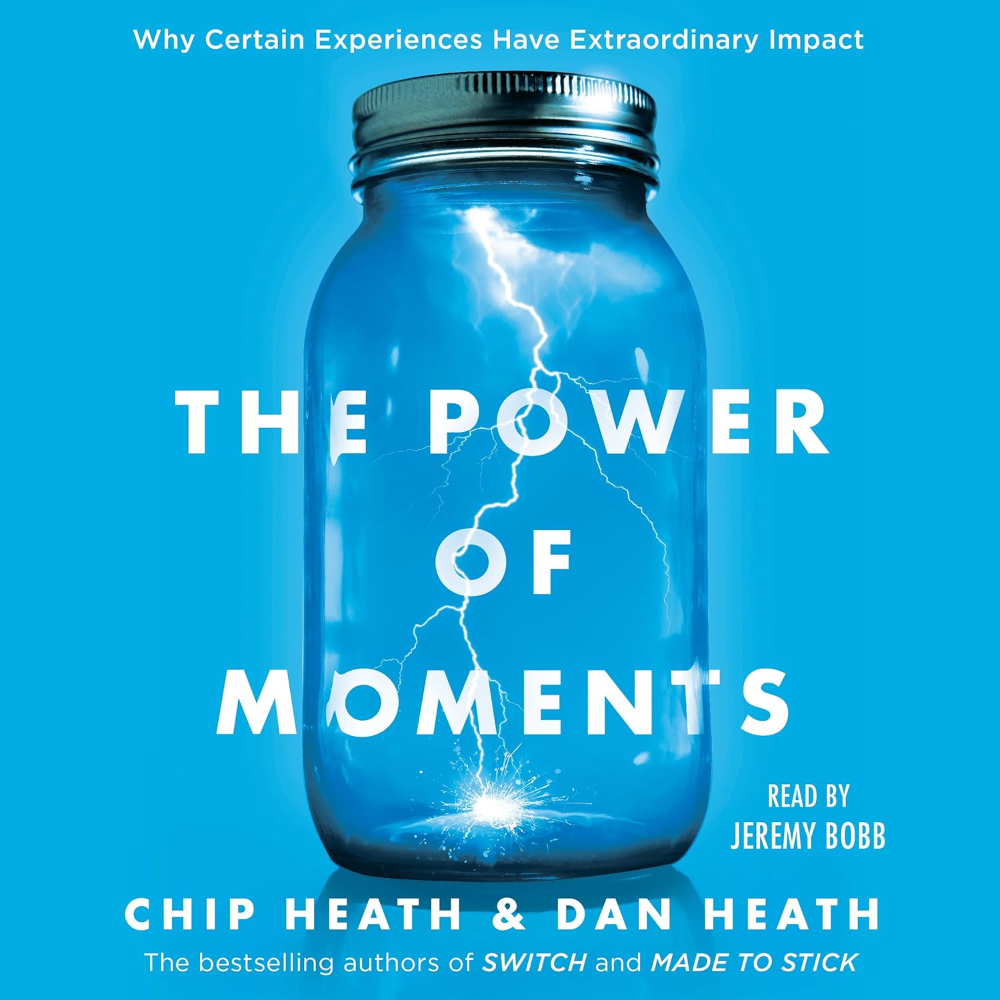
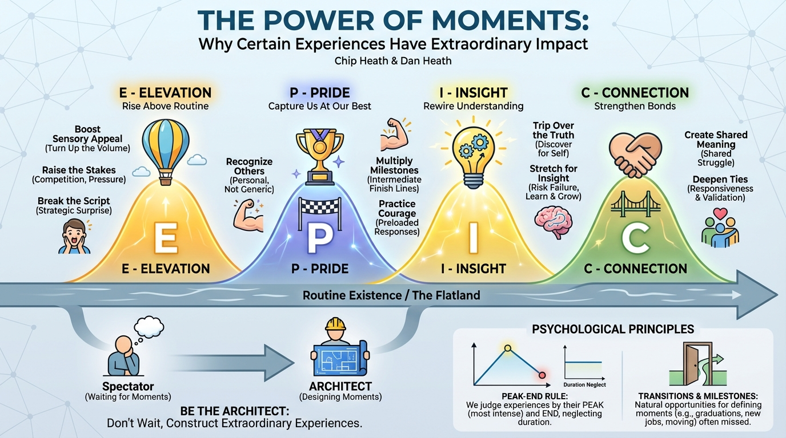

isbn-13: 9781501147777
Audible
AI Generated Content
Generated by gemini-3-pro-preview

Introduction
“The Power of Moments” by Chip Heath and Dan Heath explores the psychology behind the experiences that shape our lives. The authors argue that while our existence is a continuous stream of time, our memory does not record it that way. Instead, we remember our lives as a series of “defining moments”—short, distinct experiences that stand out from the everyday. These defining moments are often characterized by transitions, milestones, peaks, or pits [1].
The central premise of the book is that we do not need to wait for these moments to happen by chance. By understanding the elements that make an experience memorable, individuals—whether they are parents, teachers, managers, or service providers—can actively become “architects” of their own lives and the lives of others. The book provides a practical framework for turning ordinary occurrences into extraordinary events that elevate, inspire, and connect us [1][2].
Overview of the Key Points
The authors introduce the “EPIC” framework, which outlines four key elements that characterize defining moments. A powerful moment does not need to possess all four, but it usually contains at least one of these ingredients [1].
Elevation
Moments of elevation are experiences that rise above the routine. They provoke distinct delight and engagement. To build elevation, one must: * Boost Sensory Appeal: “Turn up the volume” on reality by making things look, taste, or feel better than usual. * Raise the Stakes: Introduce an element of productive pressure, such as a competition or a public performance. * Break the Script: Strategically violate expectations. By disrupting the routine with a surprise, one can capture attention and create a lasting memory [2].
Insight
Moments of insight rewire our understanding of ourselves or the world. These realizations can influence behavior for years. Strategies include: * Tripping Over the Truth: Instead of simply stating a problem, create a scenario where people discover the truth for themselves. This visceral realization is more powerful than a lecture. * Stretching for Insight: Mentors and leaders can help others generate insight by pushing them to “stretch”—placing them in situations where they risk failure but have the support to learn and grow [2].
Pride
Moments of pride capture us at our best, celebrating achievement and courage. * Recognize Others: Effective recognition must be personal rather than programmatic. Validating an individual’s specific contribution is far more impactful than a generic “employee of the month” award. * Multiply Milestones: Long journeys should be broken down into intermediate finish lines. This creates more opportunities for celebration and a sense of progress (e.g., the “Couch to 5k” model). * Practice Courage: Courage is often a result of preparation. By “preloading” a response to a difficult situation, individuals are more likely to act bravely when the moment arrives [2].
Connection
Moments of connection strengthen the bonds between people. * Create Shared Meaning: For groups, this involves synchronizing moments or facing a shared struggle, which builds solidarity. * Deepen Ties: For individuals, connection is fostered through responsiveness—demonstrating that one understands, validates, and cares for the other person [2].
Overview of the Key Themes
The Architect vs. The Spectator
A recurring theme in the book is the concept of agency. Too often, people drift through life as spectators, waiting for special occasions to occur naturally. The authors challenge this passivity, asserting that anyone can be an architect of moments. By recognizing the structure of a defining moment, we can manufacture them to improve customer service, employee engagement, and personal relationships [1].
The Peak-End Rule and Duration Neglect
The authors lean on psychological research, specifically the work of Daniel Kahneman, to explain “duration neglect.” We tend to forget how long an experience lasted and instead judge it by its “peak” (the most intense moment, positive or negative) and its “end.” This theme suggests that to improve an experience, one does not need to fix every minor detail but rather focus on creating a few high peaks and a strong finish [1].
Transitions and Milestones
Life is naturally punctuated by transitions (graduations, new jobs, moving houses). The authors emphasize that these transitions are natural opportunities for defining moments. However, many transitions are missed opportunities—such as a lackluster first day at a new job. The book argues for spotting these natural transition points and investing effort to mark them significantly.
Conclusion
“The Power of Moments” serves as a manual for escaping the “flatland” of routine. Chip and Dan Heath demonstrate that extraordinary experiences are not merely accidents of fate but are constructed from specific, replicable elements. By mastering the elements of Elevation, Insight, Pride, and Connection, we can create memories that endure, spark change, and bring us closer together. The book ultimately invites readers to pay attention to the moments that matter and to take responsibility for creating more of them.
Further Reading
- “Made to Stick” by Chip Heath and Dan Heath: Also by the Heath brothers, this book explores why some ideas survive and others die, using a similar blend of psychology and practical storytelling [3].
- “The Art of Gathering” by Priya Parker: This book complements the “Connection” aspect of the Heath brothers’ work, offering a guide to making meetings, parties, and events more meaningful [3].
- “Unreasonable Hospitality” by Will Guidara: A real-world application of the “Elevation” principle, detailing how a restaurant achieved world-class status by creating bespoke moments for guests [3].
- “Thinking, Fast and Slow” by Daniel Kahneman: The foundational text that explains the cognitive biases, such as the Peak-End Rule, that underpin the theories in The Power of Moments [3].
Sources
- [1] 12min Blog: https://blog.12min.com/the-power-of-moments-summary/
- [2] Shortform: https://www.shortform.com/blog/the-power-of-moments-book/
- [3] Goodreads: https://www.goodreads.com/book/similar/55587025-the-power-of-moments
Quotes
When people assess an experience, they tend to forget or ignore its length—a phenomenon called “duration neglect.” Instead, they seem to rate the experience based on two key moments: (1) the best or worst moment, known as the “peak”; and (2) the ending. Psychologists call it the “peak-end rule.”
The peak-end rule holds true across many kinds of experiences. Most of the relevant studies tend to focus on short, laboratory-friendly experiences: watching film clips, enduring annoying sounds, etc. On longer time frames, peaks continue to matter but the relative importance of “endings” fades somewhat. Beginnings matter, too: When college alumni were asked about their memories from college, fully 40% of those memories came from the month of September! And beginnings and endings can blur—if you change cities for a new job, is that an ending or a beginning or both? That’s why it’s preferable to talk about transitions, which encompass both endings and beginnings. What’s indisputable is that when we assess our experiences, we don’t average our minute-by-minute sensations. Rather, we tend to remember flagship moments: the peaks, the pits, and the transitions.
For the sake of this book, a defining moment is a short experience that is both memorable and meaningful.
ELEVATION: Defining moments rise above the everyday. They provoke not just transient happiness, like laughing at a friend’s joke, but memorable delight. (You pick up the red phone and someone says, “Popsicle Hotline, we’ll be right out.”) To construct elevated moments, we must boost sensory pleasures—the Popsicles must be delivered poolside on a silver tray, of course—and, if appropriate, add an element of surprise.
PRIDE: Defining moments capture us at our best—moments of achievement, moments of courage.
INSIGHT: Defining moments rewire our understanding of ourselves or the world.
CONNECTION: Defining moments are social: weddings, graduations, baptisms, vacations, work triumphs, bar and bat mitzvahs, speeches, sporting events. These moments are strengthened because we share them with others.
What’s least commonsensical is that pits can sometimes be flipped into peaks. A study of service encounters asked customers to recall recent satisfying and dissatisfying interactions with employees of airlines, hotels, or restaurants. Almost 25% of the positive encounters cited by customers were actually employees’ responses to service failures: slow service, mistaken orders, lost reservations, delayed flights, and so on. When employees handled these situations well, they transformed a negative moment to a positive one. Every great service company is a master of service recovery.